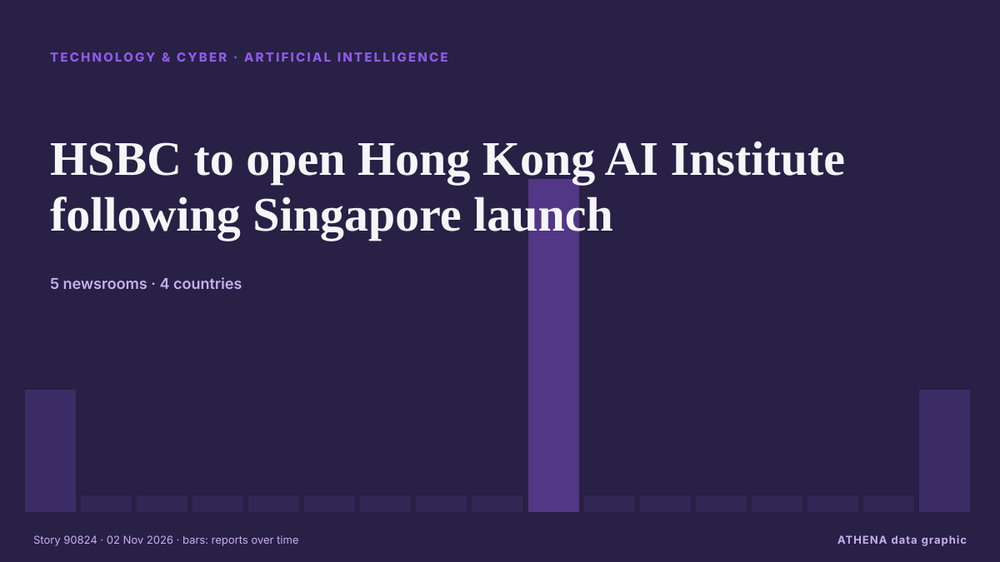

Technology, AI & Cybersecurity
SponsoredPresented by  Cybernetics and Artificial Intelligence Lab Welcome to the Cybernetics and Artificial Intelligence Laboratory, established at the Department of Business Administration of the National
Cybernetics and Artificial Intelligence Lab Welcome to the Cybernetics and Artificial Intelligence Laboratory, established at the Department of Business Administration of the National

Artificial intelligenceHSBC to open Hong Kong AI Institute following Singapore launch
The AI unit will work with Hong Kong University of Science and Technology as its anchor academic partner, although the bank's CEO Georges Elhedery did not disclose headcount details. from CNA (Channel NewsAsia)
| 20 Oct | 15 |
|---|---|
| 21 Oct | 31 |
| 22 Oct | 57 |
| 23 Oct | 55 |
| 24 Oct | 21 |
| 25 Oct | 26 |
| 26 Oct | 78 |
| 27 Oct | 84 |
| 28 Oct | 88 |
| 29 Oct | 89 |
| 30 Oct | 80 |
| 31 Oct | 34 |
| 1 Nov | 41 |
| 2 Nov | 46 |
Marvell strikes $115B deal for Lumentum
Marvell is acquiring Lumentum in an all-stock deal valued at $115 billion, representing $1,132 per share of Lumentum common stock. #pressrelease. from Light Reading
British adventurer completes 28-year, 50,000km walk home
A 57-year-old British adventurer, Karl Bushby, has returned home after completing a remarkable 28-year, 50,000-kilometre journey on foot across four continents without using any form of transport to… from Vanguard
Harry Styles & HeadCount Drive Major Voter Action During His MSG Residency: See the Numbers
"Harry's fans arrive ready to make their voices heard," HeadCount's executive director said. from Billboard
Russia Expands Electronic Warfare Systems Against Starlink
Serhii “Flash” Beskrestnov, a freelance adviser to the Ukrainian president, said on Monday that Russian forces are increasing the number of satellite electronic warfare (EW) systems that interfere… from Kyiv Post
Donald Trump backs Nvidia's Jensen Huang amid Chinese spy plot probe
Nvidia CEO Jensen Huang warned that Europe risks falling further behind the US and China in artificial intelligence, despite its industrial base and technical talent. from DigiTimes Asia
Supermarket freezers across Europe hit by apparent cyberattacks
Supermarkets in Sweden, Belgium, Luxembourg and Estonia were hit by problems, forcing some to dispose of ruined food. from The Irish News (Belfast)
Anthropic Reports $17 Billion Quarterly Revenue Ahead of IPO
Anthropic’s revenue reached $17 billion for the three months ended Sept. from PYMNTS
Germany Says Lawmakers’ Phones May Be Hacked By Spyware
Apple sent threat alerts to German MPs and officials, and Berlin says affected iPhones should be treated as compromised in a suspected state-backed attack. from to vima
South Korea to double spending on AI and chips in 2027
The country is a tech powerhouse home to Samsung Electronics and SK hynix, two of the world's three biggest makers of memory chips. from Free Malaysia Today
AI models mostly smarter than top scientists, OpenAI's Altman says
CEO says AI models capable of performing white-collar work but people must 'remain in control of the future' from Express Tribune
Hackers breach Russia's statistics agency, obtain data on Russian losses in Ukraine
Belarusian hacktivist group Cyber Partisans, together with the hacker group Silent Crow, have claimed responsibility for breaching the internal IT infrastructure of Russia's Federal State Statistics… from Ukrinform (English)
Elon Musk says 'unsustainably high' costs are the reason for Grok Bot usage limits
The SpaceX CEO said the cost of serving the AI agent was "unsustainably high relative to revenue," after some users complained about usage limits. from Business Insider
Mali and Its Neighbours in the Sahel Explained 2026
How Mali deals with Burkina Faso, Niger, Algeria, Senegal and others, from the AES bloc to fuel routes, rivers and refugees. from The Rio Times
Africa: Six in Seven Journalist Murders Go Unpunished, Unesco Reports
[UN News] Global impunity for journalist killings has risen for the first time in more than a decade, while the growing use of drones is an emerging threat for reporters in conflict zones, according… from AllAfrica
Samsung execs meet Open AI's Sam Altman to discuss AI transformation
SEOUL, Oct. 31 (Yonhap) -- Top executives from key Samsung affiliates met with O... from Yonhap (English)
Jack Grealish not expected to return for Everton at Newcastle after breach of club discipline
Everton midfielder Jack Grealish was dropped for Thursday night’s 3-1 Carabao Cup victory over Newcastle United due to a breach of club discipline. from Liverpool Echo
ADNOC becomes first energy company to deploy OpenAI Frontier in landmark deal with G42
Announced at ADIPEC 2026 in Abu Dhabi, the partnership aims to value crude before extraction and slash oilfield planning times from months to hours. from Arabian Business
Ukrainian air raid alert app sends false warnings after being hacked
The app has sent Ukrainians false warnings that some areas of the country face nuclear and chemical threats. from ABC News Australia
Cathay Pacific Joins Growing List of Airlines Hit by Data Breach
Hong Kong’s Cathay Pacific Airways Ltd. said it had joined a growing list of global airlines affected by a data breach at a major software provider. from Insurance Journal
Judge says xAI must face NAACP lawsuit on data center pollution
The legal battle revolves around the AI company's operations in southern Memphis. from Engadget
Chainalysis discloses data breach from "offensive agentic techniques"
Blockchain analytics firm Chainalysis disclosed a data breach after attackers used "offensive agentic techniques" to access internal systems and tools, exposing customer names, email addresses, user… from BleepingComputer
Malicious Claude Code extension on Cursor planted SSH backdoors
A malicious version of Anthropic's Claude Code VS Code extension was distributed through Cursor's extension marketplace for approximately 11 hours on October 29, exposing up to 5,000 developers to… from BleepingComputer
North Korea touts BBQ restaurant boom, but sceptics dismiss it as propaganda
North Korea has announced more than a dozen new barbecue restaurants since September, but analysts say the fanfare is aimed at projecting prosperity while food insecurity remains widespread. from The Kathmandu Post
ClassNK updates ship cyber security guidelines to simplify compliance
ClassNK has released the second edition of its Guidelines for Cyber Security Management System for Ships, introducing clearer audit requirements and closer alignment with international cyber security… from Container News
(LEAD) Lee vows bold investment in AI, future growth engines to boost growth potential
SEOUL, Nov. 2 (Yonhap) -- President Lee Jae Myung on Monday pledged bold investm... from Yonhap (English)
(2nd LD) S. Korea's monthly exports hit US$115.3 bln in Oct. on strong chip sales
SEOUL, Nov. 1 (Yonhap) -- South Korea's exports jumped 93.7 percent to a record ... from Yonhap (English)
Asia shares bend under AI stress; Apple earnings loom
SYDNEY: Asian share markets slipped on Monday as worries about the sustainability of the artificial intelligence (AI) investment boom loomed over the tech sector, while the high price of oil limited… from New Straits Times
OpenAI Cuts Funding Target by $10 Billion as Investor Jitters Shake AI Markets
OpenAI has cut the target for its current funding round from $30 billion to $20 billion amid investor concerns about the artificial intelligence market, The Financial Times reported Friday (Oct. from PYMNTS
‘Air-con nation’ Singapore eyes alternatives to cool down
Some buildings in the city-state are exploring active chilled beams and radiant cooling to replace compressor units that release hot air into the environment. from Free Malaysia Today
Finland launches criminal probe into land clearance for Google data centre
The investigation is expected to be complete at some point next year. from Yle News (alternative feed)
NASA telescope is on the verge of plunging back to Earth after failed rescue mission
CAPE CANAVERAL, Fla. (AP) — An aging NASA telescope is barely clinging to space after a failed rescue effort left it tottering lower and lower. from The Canadian Press (via CityNews)
Kremlin pressure: Independent Russian newspaper Novaya Gazeta shuts
Novaya Gazeta will be evicted from its office on Potapovsky Lane in central Moscow, where it has been based for 29 years, the news outlet Ekho reported. from Meduza (English)
Meta, TikTok, X lose legal challenge against UK watchdog over online safety data demands
2023 law imposes tougher content standards on TikTok, X and Meta to protect children online. from Express Tribune